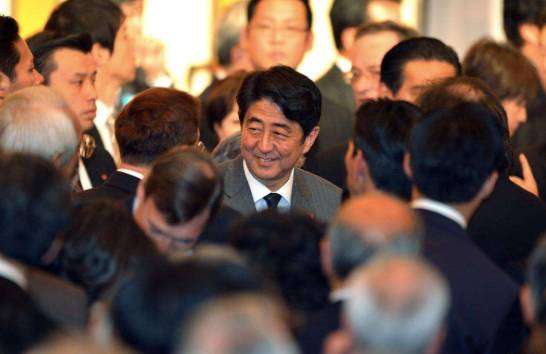
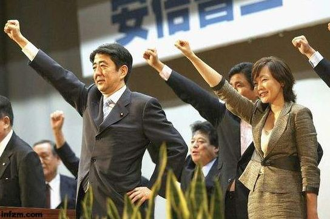
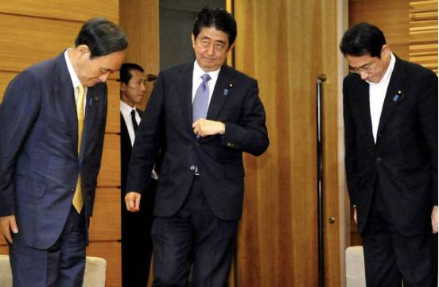
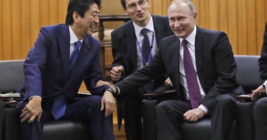
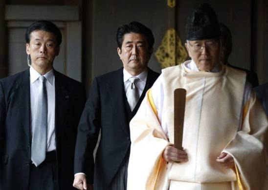
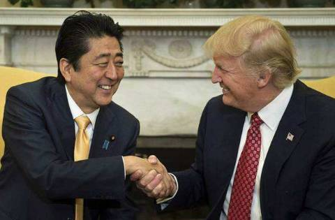

收录于合集
简
张勇
中国社会科学院日本研究所副研究员
摘要
在“摆脱战败”的强烈信念驱动下，安倍人格方面的某些特质，能在一定程度上形塑其对外政策偏好。作为改革型领导人，安倍自比“战斗型政治家”，在发挥领导力时积极主动，以目标为指向。安倍权力需求较为旺盛，敢于直面政治挫折并注重方式方法。在核心人际关系层面，安倍政权呈现明显的“小集团” 色彩，一度注重任用“侧近”人士。他既重“面子”，也要“里子”。安倍注重推行以“俯瞰地球仪的外交”与“积极和平主义”为代表的战略外交与安全保障，当前重要抓手则是“自由开放的印太战略”。在对美认知及偏好上，他主张亲美，但心存“怨念”；对华则主张政经分离，以利益而非友好来建立新型中日关系；对朝施加压力并注重利用朝鲜因素争取国内舆论的支持。
关键词
安倍晋三 人格特质 对外政策偏好
政治心理学 日本外交 中日关系
近来执政逆风不断，但“安倍一强”仍在持续。备受关注的日本众议院选举已尘埃落定，自民党又一次赢得胜利。拿下这场“关键性战役”，让安倍有望在2018年9月自民党总裁选举中第三次连任，如愿执政到2021年。如此一来，他不仅傲视战后任期最长首相佐藤荣作，而且将超越战前首相桂太郎，成为日本内阁史上执政最长的“超级政权”。
作为“日本丸”的“掌舵人”，无论从名义上，还是在实际的政策过程中，安倍晋三都是日本外交的最高决策者。在决定“安倍外交”的诸多因素中，与安倍内阁所推行的政策相较，安倍个人的因素往往被忽视甚至是无视。而笔者认为，首相个人方面的一些特质，在很大程度上形塑了这个人对外行为的逻辑。

安倍的人格特质
（一） 性格类型
政治心理学关于性格的研究，对剖析安倍的政治性格有一定借鉴意义。基于《总统的性格》一书的分析，可从对工作投入程度和享受总统职位的成就感两个维度，将领导人分为四类：主动积极型的领导人属于工作狂，也享受作为最高领导人的职位；主动消极型则对工作热情投入，但似乎不太喜欢领导人职位；被动积极型不太热心工作，而又喜欢总统一职；被动消极型，既不热情工作，也不享受职位的待遇。上述实用的划分，对于我们认识安倍的性格、工作风格和政治行动提供了一个较为可行的框架。从第一个维度来看，安倍属于主动积极型。他相信只要努力，不仅能改变事务的发展方向，也能改变一个人甚至一个国家的命运。安倍的积极主动，还体现为他能立足大的战略视野进行综合判断，注重把目标分解，谋求逐个实现。自2012年底再度出山执政之后的这五年，他对工作倾注了莫大的热情，非常专注与投入。“首相动静”的各项数据，有力地证明了这一点。实施“俯瞰地球的外交”，安倍也如愿成为历届首相出国访问次数最多的一个。从第二个维度来看，自第二任期安倍开始享受领导人职务所带来的满足感。其自信心增强也是体现之一。在某种程度上，安倍完成了外祖父及父亲未能完成的“遗志”。同时，他还奠定了一个长期执政的自民党政权，摆脱了自小泉纯一郎执政后“一年一相”的局面。通过在选举中大比例的获胜，在很大程度上解决了“扭曲国会”的格局。另外，在其格外在意的国内舆论层面，安倍也长期保持了比较高的支持率。
（二） 政治观与信条
安倍曾坦言“我不是美国那样的‘自由民主的’”，而是“保守主义”，更进一步说是“开放的保守主义”。他说，从小就知道外公岸信介被人称为“保守反动的权力化身”、“政界的黑幕”。大概是源于人人皆有的“逆反心理”，安倍对“保守”一词，一直怀有特别的亲近感。他进而表示，保守不是意识形态，而是思考日本以及日本人时的一种姿态。不仅对现在和未来、而且对生活在过去的人们我们也都负有责任。换言之，百年、千年来，在日本漫长的历史中产生、形成的传统为何得以保存下来? 对此常有真知灼见，这才是“保守主义”的精神。
安倍的政治信条，是做“战斗型政治家”。他将历史上以及现在的政治家分为两大类型，即“战斗型政治家”与“不战型政治家”。所谓“战斗型政治家”，最重要的就是为了国家、为了国民而敢做敢为、不畏指责。所谓“不战型政治家”，就是虽然赞同你的说法，但也不敢大胆表达出来而成为众矢之的。他认为，无论在哪个时代，“战斗型政治家”都是少数。自从初次当选众议员以来， 安倍就经常勉励自己，要做一名“战斗型政治家”。“这并不是说要鲁莽行事，而是要倾听国民的呼声”，“为日本，要把话讲出来”。

（三） 领导风格
伯恩斯在其著作《领袖论》中，将领袖在发挥领导力时的表现，划分为道德型、政治型、知识型、改革型、革命型、英雄型、舆论型、群体型、政党型、立法型、行政型等。上述类型又可概括为两种基本型，即改革型与交易型。说起改革型，原首相小泉纯一郎与此匹配度较高。由于其独特的执政理念与处事风格，被称为“一匹狼”。为了顺利实现改革目标，他往往把反对者统统推向对立面，或直接树为敌手。比如，因邮政民营化而不惜与自己的母体——自民党决裂，为吸引舆论的关注，甚至提出了“砸烂自民党”的口号。与小泉相比，安倍往往显得魄力不足，看似缺少原则。其中，当选首相后让小泉时期的退党人士复党也为人诟病，并一度影响到内阁支持率。但安倍的强硬，更大程度上是骨子里的。家族的政治基因已足够强大，从政受挫的经历也刻骨铭心，使得安倍在平和的外表之下，藏着一颗推动政治社会变革的心。在“摆脱战败”的旗帜下，做了历届内阁想做而未做的事情。即使是第一任期，也推动了防卫厅升格为防卫省，制订《教育基本法》等。第二任期后，他成立国家安全保障会议，制订《国家安全战略》、新《防卫计划大纲》以及《中期防卫力量整备计划》，通过“新安保法”，在安全政策领域大幅突破了以往历届首相的立场和作为，包括自己的外祖父。当然，安倍身上也有交易型的一面。他曾明确表示：“我经常被批判为鹰派，关于这一点，我从不在意。为了确保国民的生命和财产，国家的和平与稳定，这才是目的。作为手段，我会根据形势，并不排除从左翼到鹰派的之间的选择项。”在近五年的执政活动中，安倍这方面的特点尤为明显。
（四） 权力需求
政治家追求权力，无可厚非。安倍对权力的渴望，也是逐渐被激发出来的。外祖父的黯然下台，父亲的“出师未捷身先死”，家族的抱负与遗憾对安倍的影响是巨大的。当选首相，完成长辈未竟的政治课题，在很大程度上成了安倍无法摆脱的“宿命”，正如母亲洋子所说，安倍是“宿命之子”。2007年以患“溃疡性大肠炎”的名义黯然离开首相官邸，2012年再度入主，这“一落一起”的经历，使安倍对权力的理解和渴望都更胜一筹。

按照安倍的说法，2012年考虑再度出山竞选自民党总裁时，除了妻子安倍昭惠，其他人几乎一片反对意见。但在一番理性评估后，特别是倾听了党内及乡党对他的评价，安倍还是毅然决定出马。如果没有旺盛的权力需求（或者是通过行使权力来证明自己），也许就没有我们现在看到的安倍了。
（五） 人际关系风格
由于曾在美国长期学习，自称受个人主义观念的影响，安倍有时也不分地位、长幼，直抒己见，想着只要想法正确就能被立即采用。因此，起初也有评价说他有些“傲”。但从政后，在一定程度上，安倍吸取了岸处世的教训。长期跟随晋太郎做秘书的职业历练，也使得他比较注重人情练达这一从政的要谛，在不改初衷的前提下，尽可能地与周边搞好关系，以助其成事。
安倍晋三与父亲安倍晋太郎
在核心人际关系层面，安倍呈现明显的“小集团”色彩，与亲朋同学互相帮衬。在一些问题上，安倍还是能听进去劝的，这点与执意每年都参拜靖国神社的小泉有很大不同。当然， “听劝”的前提是他认为与自身主要目标并不冲突。安倍担任首相后，特别是第一任期，许多旧交纷纷进入政府甚至入阁拜相。因此，安倍内阁还被外界戏称作“朋友内阁”。
（六）“面子” 与“里子”
安倍的逻辑是，既要“面子”，也要“里子”。当“面子”与“里子”相冲突时，后者优先。特别是在重大外交场合，无论是见俄罗斯总统普京时的“一路小跑”，还是与美国总统特朗普会晤时的谦恭，安倍的这一特质体现得淋漓尽致。以上场景往往被外界所诟病，但这都是问题的表象。如果以此判断安倍示弱，那就大错特错了。这与日本人处理人际关系时特有的细腻有关，但对安倍而言，在更大程度上都是有利于实现目标的手段。

安倍的对外政策偏好
在具有“外溢”效应的国家重大政策问题上，安倍既在战略上固守“内核”，又在策略上相对务实，从而形成他个性鲜明的对外政策偏好。
（一） 是否修宪以及以何种程序修宪
关于修宪，通过分析安倍最近的一系列发言，其相关偏好可概括为：（1）自民党建党精神之一是倡导“制定自主宪法”。因此，作为建党以来的目标，修宪至今始终都是党的竞选纲领之中。在本次大选中，安倍首次将其定位为竞选纲领的支柱、主要项目之一，并提出了四项修宪内容。（2）修宪不受所设日程的限制。2017年5月安倍提出要以2020年为目标，目的是为了使讨论更加活跃。首先是“在宪法审查会上，各党都拿出修宪方案，认真开展建设性的讨论”，这一点非常重要。（3）今后，“我们会按照竞选纲领中的基本思想，针对具体的条文草案在党内开展讨论。将自民党内深入讨论之后的汇总方案递交国会宪法审查会。然后，在国会开展讨论，增进国民理解”。（4）修宪，需要获得三分之二议员的赞成方可创议。执政党方面已经获得了三分之二的议席。“虽然我们已经连续3次大选都获得了三分之二的议席，但我认为我们不应拘泥于执政党或是在野党，而应为获得广泛的共识而不断努力。在此基础上，我们会不断努力以获得国民的理解。”
（二） 是否继续参拜靖国神社
参拜靖国神社，反映了安倍错误的历史观。2013年12月，二度执政一周年的纪念日，安倍赴靖国神社正式参拜。随后，他抛出了早已拟好的“首相讲话”，列出几条理由来为其行为辩护：第一，目的是向为日本献出生命的人表达尊崇的心情，同时祈祷冥福、祝愿永久和平；第二，向“英灵”汇报政权一年来的表现；第三，无意伤害受害国人民的感情；第四，对参拜靖国神社演变为政治与外交问题表示遗憾。

安倍晋三曾参拜靖国神社
在该问题上，冈崎久彦曾明确建言安倍。冈崎认为，安倍提出“摆脱战后体制”，有两大目标：一是历史问题，二是安全保障问题（与修宪也紧密相关）。这两大目标都很重要，但不能同时追求“两只兔子”，否则国内外压力太大，得不偿失。冈崎的建议是，应首先分出先后次序，先求实惠，等实惠到手再寻名誉。结合近三年的情况综合判断，应当说，安倍还是在一定程度上接受了冈崎的建议。因此，在正常情况下，安倍作为首相很难再去正式参拜。而如果安倍选择不再参拜，这对今后的政权（不管今后上台的人是谁）也会形成示范效应。
（三） 战略性外交
一是“俯瞰地球仪的外交”，这是安倍对“战略外交”更为形象的表述。其“就任首相以来，一直开展俯瞰地球仪的战略性外交”。“我凝视着地球仪”，“在心中描绘着地球”。在他看来，所谓“俯瞰地球仪的外交”，其含义是指作为日本外交的基本方针，不是只关注与周边各国的双边关系，而是要像注视地球仪那样俯瞰整个世界，立足于自由、民主主义、基本人权、法制支配等基本价值观，开展战略性外交。
二为“积极和平主义”。安倍将“积极和平主义”比作日本全新的“自画像”，认为这是今后代表和引导日本的一面旗帜。2015年7月9日，他在美国战略与国际问题研究中心致辞时曾称，“自从我执政以来，就一直高举基于国际协调主义的积极和平主义旗帜”。在第68届联合国大会一般性辩论演说时，安倍首次提出这一“基本思想”。他表示，“日本将与以往一样，不，鉴于世界愈益笼罩在悲剧之中，将作为更胜以往的、和平与稳定的力量而存在。以与国际社会的协调为支柱，以我国努力为世界的繁荣与和平做出的无可置疑的业绩和不可动摇的评价为根基，举起积极和平主义的崭新旗帜。” 2014年7月1日，日本内阁会议作出了完善新安保法基本方针的决定。而此次阁议决定的“基本思想”，就是安倍强调的“积极和平主义”。

作为“俯瞰地球仪的外交”与“积极和平主义”重要抓手的“自由开放的印太战略”。近期，随着特朗普访日，这一表述成为描述日本新外交战略的热词。出台这一战略的缘起，是基于安倍对世界格局的判断，他认为接下来是“印度—太平洋世纪”，要由日本和美国一同带领前行。其构想逻辑是：在“东亚→南亚→中东→非洲”这一“长链条”上，从基础设施、贸易、投资、开发、人才培养等入手扩大日本的参与度，使之成为安倍经济学的重要“推动力”。同时，新战略也关涉安保。日本将首先探索由日美澳印建立海洋秩序，希望创建四国战略对话，把合作具体化。未来还将加入英法，构建更加广域的安保合作机制。此外，新战略有抗衡中国提出的“一带一路”构想的意图。
（四） 对美认知与政策偏好
应当说，留学美国，得以亲身体验美国社会生活，这段经历对安倍产生了很大的影响。同时，安倍也常常以“美国通”自居。他认为在美国外交传统中，对独立宣言、宪法所倡导的理想，主要表现为三种思考模式：一是孤立主义；二是相对于理想更为重视国家利益，积极参与国际政治的现实主义；三是基于理想主义、福音主义的使命感，要将美国宪法的理念向全世界推广的思想模式。在不同的时代，这三种模式影响美国外交政策的方式与力度也有所差别，但却一直存在。基于这一逻辑，他也许并不认为特朗普政权在美国历史中是非常特殊的政权。
在安倍成长和从政的经历中，日美同盟特别是作为其基础的《日美安保条约》给他留下了深深的印记。同时，他父亲任外相时，最为重视的也是日美关系。因此，安倍基于家传，对搞好日美关系是有自信的。特朗普竞选成功后，安倍迅速启动对美人脉，开始全面收集关于特朗普的各种信息，赴美与特朗普见面。这一事例也显示出安倍内阁灵活多变的特点。安倍认为，要使太平洋到印度洋的广阔海域成为贯彻自由、法治的和平海域，必须加强日美同盟。作为手段之一，日本需要充实安保法制，以大幅提高“无缝”应对能力。这样一来，自卫队与美军之间的合作关系将会得到进一步加强，日美同盟也将得以巩固。另一手段是更好的合作机制，也就是“日美防卫合作新指针”。他认为这是一个为构筑更为坚实的和平而拟订的历史性文件。
1960年1月，安倍晋三的外祖父，日本时任首相岸信介在白宫签署《日美安保条约》。图右为美国总统艾森豪威尔
（五） 对华政策偏好
安倍认为，所谓战略互惠关系，以往中日关系是“友好第一”，即“为了友好而友好”，损害了日本的国家利益。友好不过是实现国家利益目标的手段，“友好第一”是把手段目的化，这样就本末倒置了。真正的战略互惠关系是两国都应追求自己的国家利益。鉴于中日关系具有互补性，特别是经济关系密不可分。为了不破坏这种互补性，要致力于解决政治问题。对此，安倍开出的“药方”是“政经分离”。他认为，为了控制双方之间的问题，国家首脑进行直接对话是最重要的。
在政经分离原则下，安倍的对华政策偏好体现为矛盾的两面：接触与对冲，经济上谋求接触，安全上实施对冲，既表明具有反对中国以实力改变现状与秩序的强烈意志与相应能力，同时又声称战略互惠关系是两国之利，为此双方需管控海空危机，加强相关对话与合作。同样在钓鱼岛问题上，日本注重对中国博弈，施加影响。日本不断渲染中国军力发展及海洋活动的所谓“威胁性”，将“中国以实力改变现状”这一主观论调作为其涉钓战略调整的“合法性依据”。实际上，其目的并非单纯防范所谓“中国威胁”，实质是通过谋求涉钓战术优势，确保有利于日本的战略态势。
（六） 对朝政策偏好
朝鲜问题，是安倍外交的重点之一。如果没有朝鲜因素，安倍强硬的一面就不会通过媒体的报道，让国民觉得其有“领导力”。
下一步，对朝鲜是继续施压，还是转而谋求对话? 安倍的基本逻辑是：（1）虽然朝鲜今后的行动无法断言，但无论怎样，日本都应继续强烈要求其严格遵守联合国安理会决议，不得实施任何挑衅行为；（2）20年来的历史证明，与朝鲜之间为了对话而对话是毫无意义的。日本必须结合以往对朝外交的经验教训来做出今后的判断；（3）必须要求朝鲜通过完全、可验证且不可逆的方式放弃所有核武器和弹道导弹计划。为此，有必要与国际社会联手，通过一切手段对其施加最大限度的压力，直至朝鲜方面提出改变政策、希望对话的请求。
小结
概而言之，安倍，既有“鸷”强硬的一面，又具务实的另一面。通过长期执政，正带领日本“摆脱战败”，打造一个新生的日本。在这一历史时期，国际社会应保持足够的警惕。
当前，中日关系处于爬坡过坎、转型发展的历史关头，短期呈现向好之势。这一局面得来不易，自当珍惜。中日两国既要正视历史，也要面向未来。既要恪守原则，也要积累互信。通过不断加强合作，实现互利共赢。（文章有删改，具体内容参见原文）
文章来源：《外交评论》2017年06期
筛选：ササ 编辑：ササ 里仝
轻点下方广告支持我们
我们将更好地为您呈现精彩内容！